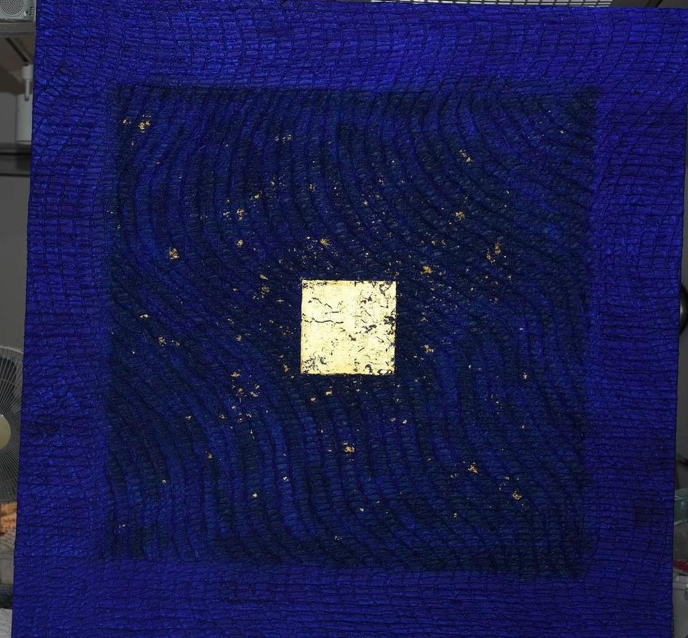

DIGNITY 2663#81
Mixed media on canvas (24K gold leaf, hanji, natural lacquer)
Inspired by Van Gogh's The Starry Night — the painting the artist turns to in lonely, solitary moments.
Series · DIGNITY
Deep textures built from repeated strokes speak of life's trials and time; the square that glows within them stands for the dignity inherent in every person.
Price, availability, framing, shipping and sizing for your space are provided on request.